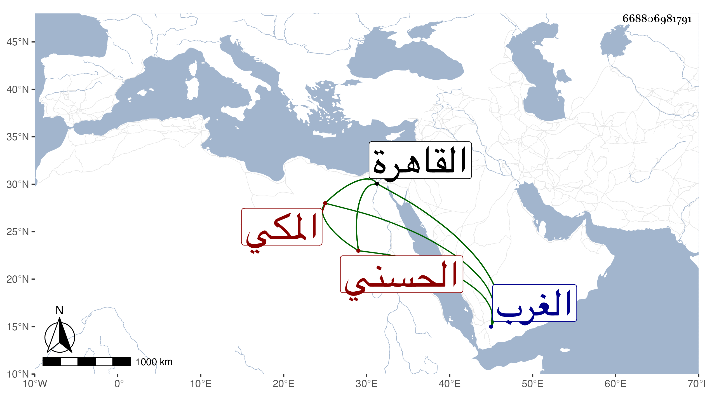

0902Sakhawi.DawLamic.ITO20230111-ara1.EIS1600.668806981791
Biography ID: 668806981791
914
علي بن عنان بن مغامس بن رميثة بن أبي نمي العلاء أبو الحسن الحسني المكي . ولي إمرتها مرة للإشرف برسباي في المحرم سنة سبع وعشرين عوضا عن البدر حسن بن عجلان وخرجت معه تجريدة من الممالك السلطانية مقدمهم قرقماس الشعباني الناصري فلم يلق حربا وأقام على إمرته ثم انفصل ودخل الغرب فأكرمه أبو فارس ملكها ثم رجع إلى القاهرة فأقام بها ، وكان حسن المحاضرة يذاكر بالشعر ونحوه ، وذكره المقريزي في عقوده وأنه كان لين الجانب . مات بالقاهرة مسجونا في قلعتها يوم الأحد ثالث جمادى الآخرة سنة ثلاث وثلاثين مطعونا شهيدا غريبا وحيدا عفا الله عنه .
